Urlaubsanträge in Teams verwalten
Important
Die Funktion ist teilweise oder komplett in jeder Sandbox‑ oder Testumgebung als öffentliche Vorschau verfügbar. In Produktionsumgebungen ist sie nicht verfügbar. Inhalt und Funktionsweise unterliegen Änderungen. Weitere Informationen zur Aktivierung der Vorschaufunktionen finden Sie unter Funktonen verwalten.
Mit der Microsoft Dynamics 365 Human Resources-App in Microsoft Teams können Sie schnell arbeitsfreie Zeit beantragen und Informationen zu Salden arbeitsfreier Zeiten in Microsoft Teams anzeigen. Sie können mit einem Bot interagieren, um Informationen anzufordern und eine Urlaubsanfrage zu starten. Die Registerkarte Arbeitsfreie Zeit enthält detailliertere Informationen. Sie können Personen Informationen auch über Ihre bevorstehende arbeitsfreie Zeit in Teams und Chats außerhalb der Human Resources-App senden.
App installieren
Sie finden die Human Resources-App im Teams Store.
Wählen Sie in Microsoft Teams die drei Punkte aus.
Suchen Sie nach Dynamics 365 Human Resources, und wählen Sie dann die Kachel Human Resources aus.
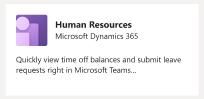
Wählen Sie die Schaltfläche Hinzufügen aus, um die App zu installieren.
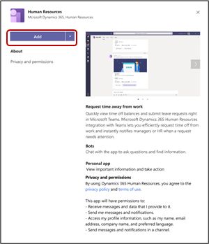
Wenn Sie nicht automatisch von der App angemeldet werden, wählen Sie die Registerkarte Einstellungen aus, um sich anzumelden.
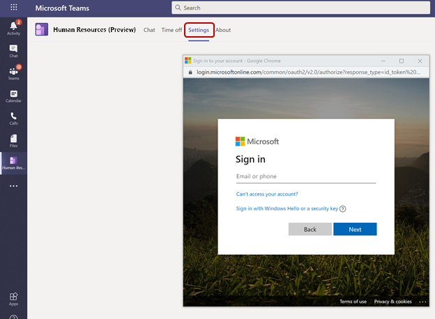
Note
Wenn kein Anmeldedialogfeld angezeigt wird, überprüfen Sie die Einstellungen Ihres Browsers, um Popupfenster zuzulassen.
Wenn Sie Zugriff auf mehrere Human Resources-Instanzen haben, können Sie auf der Registerkarte Einstellungen festlegen, zu welcher Umgebung Sie eine Verbindung herstellen möchten.
Note
Die App unterstützt jetzt die Sicherheitsrolle des Systemadministrators.
Bot verwenden
Nach der Installation der App wird eine Willkommensnachricht angezeigt, in der Sie über die Aktivitätstypen informiert werden, die der Bot in Ihrem Namen ausführen kann.
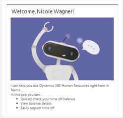
Note
Bei der ersten Interaktion mit dem Bot müssen Sie sich möglicherweise anmelden. Wenn kein Anmeldedialogfeld angezeigt wird, überprüfen Sie die Einstellungen Ihres Browsers, um Popupfenster zuzulassen.
Sie können den Bot bitten, die folgenden Aktionen durchzuführen:
Informationen zum Freizeitguthaben für jeden Urlaubstyp anzeigen, für den Sie sich angemeldet haben
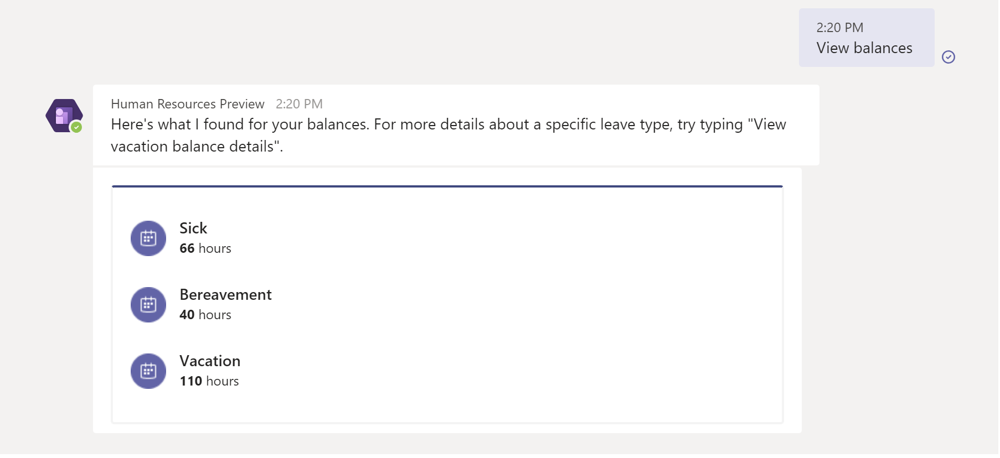
Zusätzliche Details zu einem bestimmten Urlaubstyp anzeigen
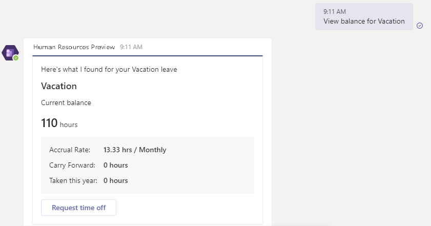
Urlaubsanforderung für Sie starten
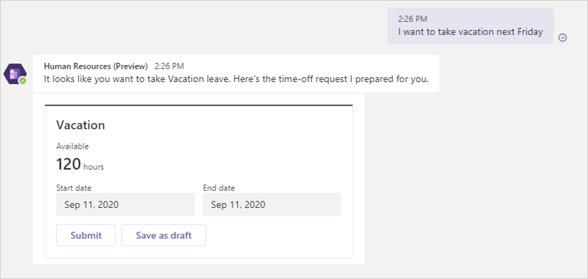
Nachdem Sie einen Urlaubsantrag gestellt haben, können Sie die Tage direkt auf der Karte anpassen.
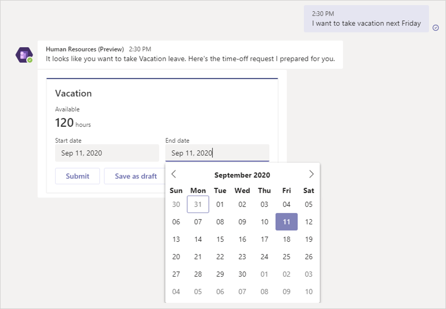
Wenn Sie die Informationen eingegeben haben, wählen Sie Absenden aus, um sie zur Genehmigung einzureichen. Sie können auch Als Entwurf speichern auswählen, um später darauf zurückzukommen.
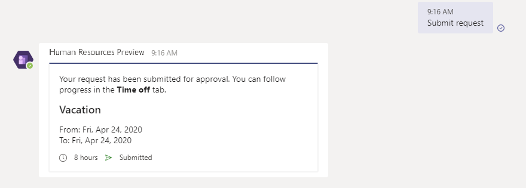
Urlaub in Teams verwalten
Auf der Registerkarte Arbeitsfreie Zeit können Sie Folgendes anzeigen:
Saldoinformationen für jeden Urlaubstyp anzeigen, für den Sie registriert sind
Anstehende Urlaubsanforderungen
Anforderungen von arbeitsfreier Zeit
Urlaubsanforderungen entwerfen
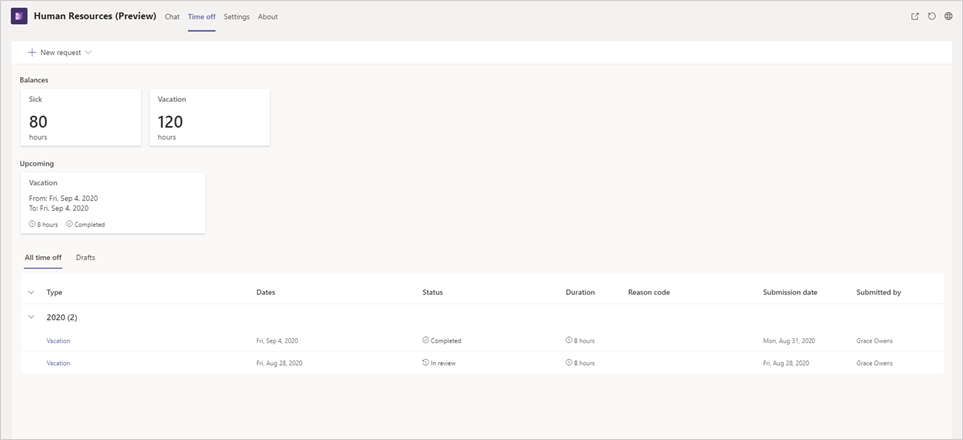
Neue Anforderung erstellen
Wählen Sie Neue Anforderung aus, um eine neue Urlaubsanforderung zu erstellen.
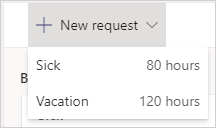
Geben Sie den/die Tag(e) ein, den/die Sie sich frei nehmen möchten, und wählen Sie dann Hinzufügen aus.
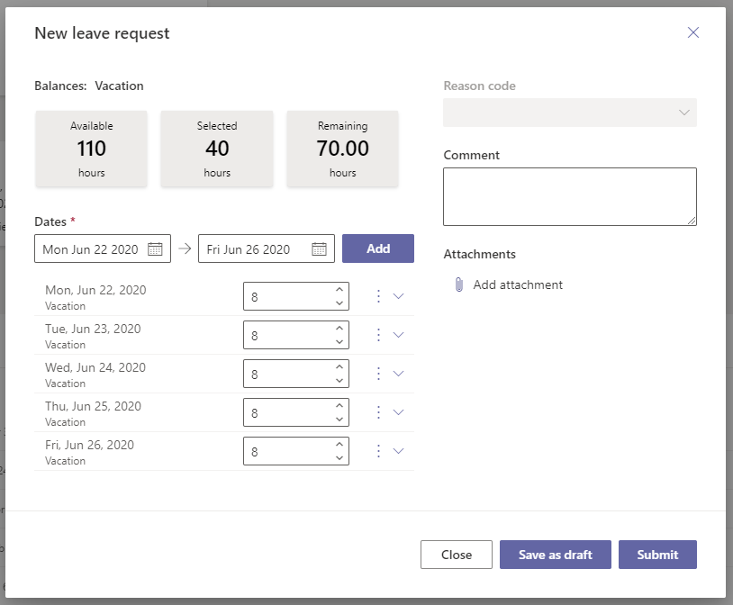
Geben Sie gegebenenfalls einen Ursachencode ein. Geben Sie auch Kommentare ein, und fügen Sie Anhänge hinzu.
Wenn Sie die Informationen eingegeben haben, geben Sie Absenden ein, um sie zur Genehmigung einzureichen. Sie können auch Als Entwurf speichern eingeben, um später darauf zurückzukommen.
Entwurfsanforderungen verwalten
Wählen Sie die Registerkarte Entwürfe aus.
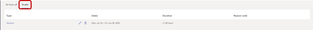
Wählen Sie den Stift aus, um die Anforderung zu bearbeiten, oder wählen Sie den Papierkorb aus, um die Anforderung zu löschen.
Nehmen Sie die erforderlichen Änderungen vor. Wenn Sie die Informationen eingegeben haben, geben Sie Absenden ein, um sie zur Genehmigung einzureichen. Sie können auch Als Entwurf speichern auswählen, um später darauf zurückzukommen.
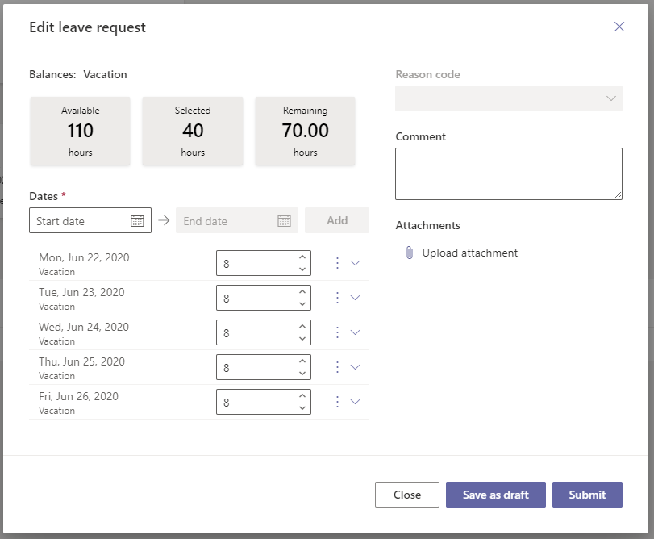
Antworten auf Teams-Benachrichtigungen
Wenn Sie oder ein Mitarbeiter, für den Sie Genehmiger sind, einen Urlaubsantrag stellen, erhalten Sie eine Benachrichtigung in der Human Resources-App in Teams. Sie können die Benachrichtigung auswählen, um sie anzuzeigen. Benachrichtigungen werden auch im Plaudern-Bereich angezeigt.
Wenn Sie ein Genehmiger sind, können Sie in der Benachrichtigung Genehmigen oder Verweigern auswählen. Sie können auch eine optionale Nachricht bereitstellen.
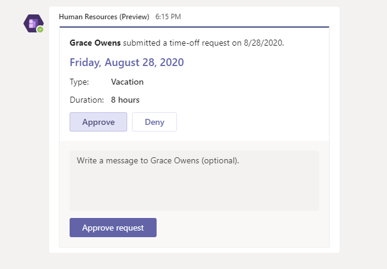
Informationen zu bevorstehender arbeitsfreier Zeit an Ihre Kollegen senden
Nachdem Sie die Human Resources-App für Teams installiert haben, können Sie Ihren Kollegen in Teams oder Chats problemlos Informationen zu Ihrer arbeitsfreien Zeit senden.
Wählen Sie in einem Team oder Chat in Teams die Schaltfläche Human Resources unter dem Chatfenster.
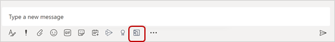
Wählen Sie die Urlaubsanfrage aus, die Sie teilen möchten. Wenn Sie einen Entwurf für einen Urlaubsantrag freigeben möchten, wählen Sie zuerst Entwürfe.
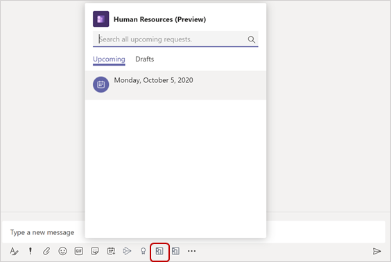
Ihre Urlaubsanfrage wird im Chat angezeigt.
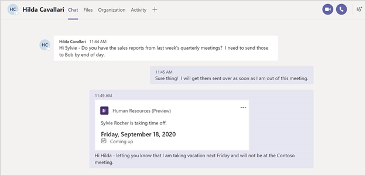
Wenn Sie einen Entwurfsantrag freigegeben haben, wird dieser als Entwurf angezeigt:
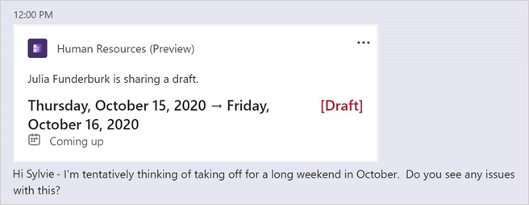
Urlaubskalender Ihres Teams anzeigen
Wenn Sie ein Manager mit direkten Berichten sind, können Sie die genehmigte und ausstehende arbeitsfreie Zeit Ihres Teams anzeigen.
Wählen Sie in der Human Resources-App in Teams die Option aus Arbeitsfreie Zeit aus.
Wählen Sie Teamkalender.
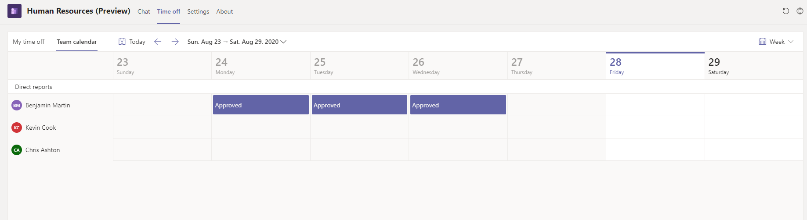
Der Kalender zeigt die genehmigte und ausstehende arbeitsfreie Zeit Ihrer direkten Berichte an.
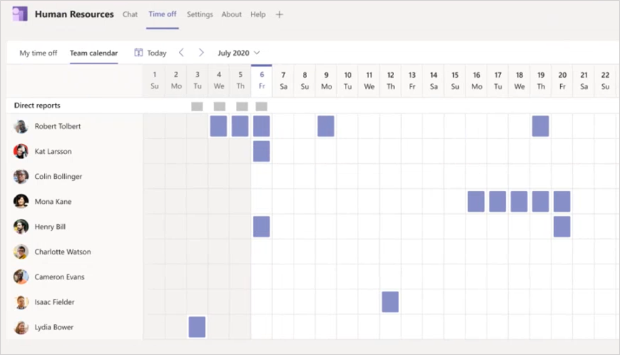
Problembehandlung
Wenn Sie Probleme beim Anmelden oder Verwenden der Human Resources Teams-App haben, befolgen Sie diese Anweisungen zur Problembehandlung. Wenn Sie nach der Problembehandlung immer noch Probleme haben, wenden Sie sich an den Support. Weitere Informationen erhalten Sie über den Support.
Sie können sich nicht in Teams bei der Human Resources-App anmelden
Wenn Sie sich nicht bei der App anmelden können, ist es möglich, dass das Konto, das Sie zur Anmeldung bei Microsoft Teams verwenden, keinem Mitarbeiterdatensatz in Dynamics 365 Human Resources zugeordnet ist. Wenden Sie sich an Ihren Systemadministrator, um sicherzustellen, dass Ihr Mitarbeiterdatensatz korrekt zugeordnet ist.
Fehler beim Genehmigen von Urlaubsanträgen in der Human Resources-App in Teams
Wenn Sie beim Versuch, Urlaubsanträge in der Teams-App zu genehmigen, eine Fehlermeldung erhalten, versuchen Sie es mit der folgenden Problembehandlung:
Stellen Sie sicher, dass das Konto, mit dem Sie sich bei Microsoft Teams anmelden, dasselbe ist, mit dem Sie auf Dynamics 365 Human Resources zugreifen.
Stellen Sie sicher, dass Sie ein gültiger Genehmiger für die Anforderung sind, indem Sie die Workflow-Einstellungen auf Urlaubsgenehmigung überprüfen. Weitere Informationen zu Workflows für Urlaubsanträge finden Sie unter Erstellen eines Workflows für Urlaubsanträge.
Bekannte Probleme mit den Eingabehilfen
In der Human Resources-App in Teams gibt es die folgenden Probleme mit den Eingabehilfen, an deren Behebung wir in zukünftigen Versionen arbeiten.
| Abgang | Problemumgehung oder Erklärung |
|---|---|
| Bei Zoomen auf 400 % auf dem Desktop werden einige der Aktionsschaltflächen ausgeblendet. | Sie sollten eine Bildschirmlupe verwenden, bis wir diese Zoomstufe unterstützen können. |
| Auf der Registerkarte Arbeitsfreie Zeit gibt das Voiceover eine Schaltfläche „Aktion“ an, wenn die Kopfzeile für das Raster für arbeitsfreie Zeit vorliest. | Die Kopfzeile und die Elemente im Raster sind nach Jahr gruppiert und können ausgeblendet werden. Das Voiceover interpretiert dies als umsetzbares Element, obwohl dies nicht der Fall ist. |
| Wenn Sie wischen, während ein Popup oder Menü geöffnet ist, liest das Voiceover das Popup oder den Menüinhalt nicht vor. | Erkunden Sie den Inhalt mithilfe des Fingerscannens. |
| In der Registerkarte Arbeitsfreie Zeit gibt es eine zusätzliche Wischgeste, wenn Sie zum Ursachencode in einem neuen Antrag navigieren. | Es gibt kein verstecktes Steuerelement, zu dem die Wischnavigation gelangen möchte. |
| Wenn Sie in der Registerkarte Arbeitsfreie Zeit wischen, während der Kalender geöffnet ist, befinden Sie sich außerhalb des Steuerelements, anstatt in einem neuen Antrag oder beim Bearbeiten eines Antrags ganz oben. | Wenn Sie Zu heute gehen erreichen, betrachten Sie dies als Ende des Steuerelements und wischen Sie in die entgegengesetzte Richtung, um wieder nach oben zu gelangen. |
| Das Voiceover liest die Beschriftung für Daten nicht vor. | Die paarweise angetroffenen Daten sind immer ein Startdatum und ein Enddatum. |
| In der Registerkarte Chat springt der Fokus wieder nach oben, wenn Sie ein Datum eingeben, während Sie das Hilfsmittel oder die Tastaturnavigation verwenden. | Tippen Sie, bis Sie Ihren Eingabebereich wieder erreichen. |
Datenschutzhinweis
Microsoft Language Understanding Intelligent Service (LUIS)
Mit dem Bot von Dynamics 365 Human Resources in Microsoft Teams werden die Texteingaben des Benutzers analysiert, um die zugrunde liegende Abfrage/Absicht zu verstehen. Die Eingabe des Benutzers, z. B. „Suchkonto Contoso“ wird an einen Cognitive Service von Microsoft mit dem Namen „Language Understanding Intelligent Service“ (LUIS) weitergeleitet. Weitere Informationen zu LUIS finden Sie hier. Der LUIS-Dienst unterscheidet oder versteht die Absicht der Benutzereingabe (in diesem Fall besteht die Absicht darin, Informationen zu suchen) und die Zielentität (in diesem Fall ist die beabsichtigte Entität ein Konto mit dem Namen Contoso). Diese Informationen werden dann an das Azure Bot Framework von Microsoft weitergegeben, das mit Daten aus Dynamics 365 Human Resources interagiert und die gewünschten Informationen für die Benutzerabfrage abruft.
Wenn Sie den Bot installieren und den Zugriff für die Verwendung des Bots erlauben, stimmen Sie zu, dass der LUIS-Dienst und das Azure Bot Framework die Absicht hinter der Eingabe verarbeiten können, was zu einer verbesserten Benutzerumgebung für Unterhaltungen führt. Der LUIS-Dienst und das Azure Bot Framework weisen im Vergleich zu Dynamics 365 Human Resources möglicherweise unterschiedliche Konformitätsstufen auf. Während der LUIS-Dienst nur auf die Benutzerabfragen zugreifen kann und nicht für die Verbindung mit den Dynamics 365 Human Resources-Daten oder dem Konto des Benutzers ausgelegt ist, könnte ein Benutzer des Bots von Dynamics 365 Human Resources freiwillig eine Abfrage mit Debitorendaten, personenbezogenen Daten oder anderen Daten eingeben, und solche Abfrageinhalte könnten an den LUIS-Dienst und das Azure Bot Framework gesendet werden.
Der Inhalt der Abfragen und Nachrichten des Benutzers wird maximal 30 Tage im LUIS-System gespeichert, im Ruhezustand verschlüsselt und nicht für Schulungen oder die Verbesserung von Dienstleistungen verwendet. Weitere Informationen zu Cognitive Services findne Sie hier.
Wechseln Sie zum Microsoft Teams Admin Center, um Administratoreinstellungen für Apps in Microsoft Teams zu verwalten.
Microsoft Teams, Azure Event Grid und Azure Cosmos DB
Bei Verwendung der Dynamics 365 Human Resources-App in Microsoft Teams fließen möglicherweise bestimmte Kundendaten außerhalb der geografischen Region, in der der Human Resources-Dienst Ihres Mandanten bereitgestellt wird.
Dynamics 365 Human Resources überträgt die Urlaubsantrags- und Workflow-Aufgabendetails des Mitarbeiters an Microsoft Azure Event Grid und Microsoft Teams. Diese Daten können bis zu 24 Stunden in Microsoft Azure Event Grid gespeichert werden und werden in den USA verarbeitet, werden während des Transports und als Daten in Ruhe verschlüsselt und werden von Microsoft oder seinen untergeordneten verarbeitenden Betrieben nicht für Schulungen oder Serviceverbesserungen verwendet. Um zu verstehen, wo Ihre Daten in Teams gespeichert sind, lesen Sie bitte: Speicherort von Daten in Microsoft Teams.
Während der Konversation mit dem Chat-Bot in der Human Resources-App wird der Konversationsinhalt möglicherweise in Azure Cosmos DB gespeichert und an Microsoft Teams übertragen. Diese Daten können in Azure Cosmos DB bis zu 24 Stunden lang gespeichert und außerhalb der geografischen Region verarbeitet werden, in der der Human Resources-Service Ihres Mandanten bereitgestellt wird, werden während des Transports und in Ruhe verschlüsselt und von Microsoft oder seinen untergeordneten verarbeitenden Betrieben nicht für Schulungen oder Serviceverbesserungen verwendet. Um zu verstehen, wo Ihre Daten in Teams gespeichert sind, lesen Sie bitte: Speicherort von Daten in Microsoft Teams.
Um den Zugriff auf die Human Resources-App in Microsoft Teams für Ihre Organisation oder Benutzer in Ihrer Organisation zu beschränken, finden Sie unter Informationen unter Verwalten von App-Berechtigungsrichtlinien in Microsoft Teams.
Siehe auch
Microsoft Teams herunterladen und installieren
Microsoft Teams-Hilfecenter
Human Resources-App in Teams